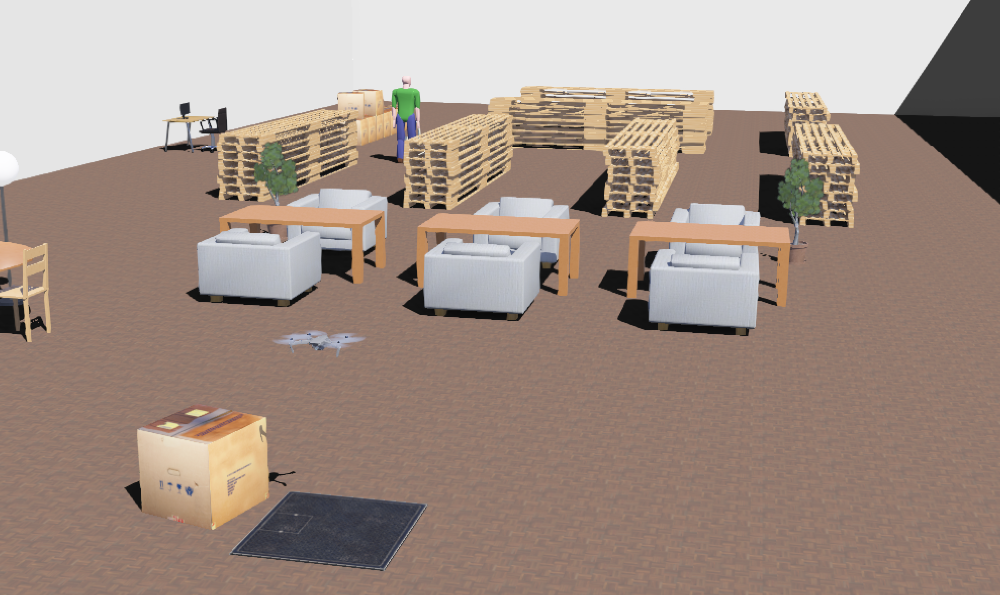
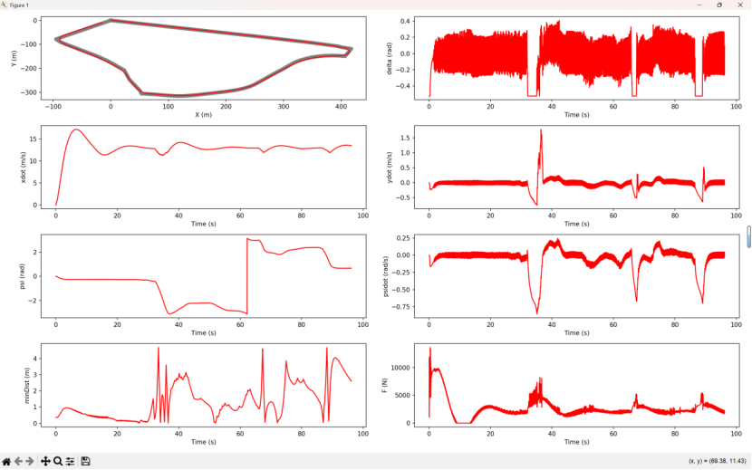
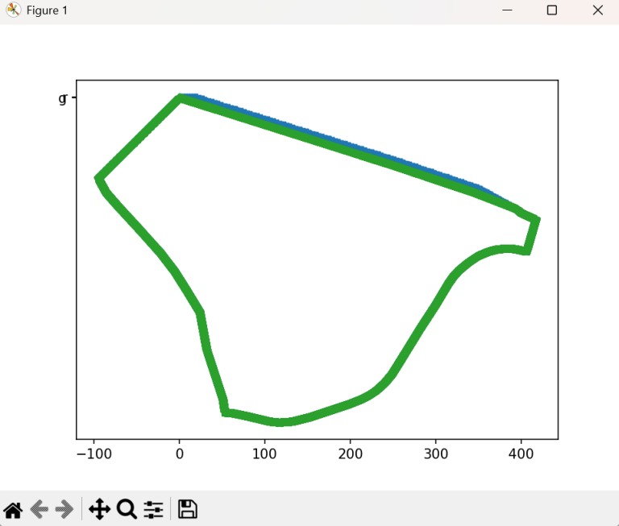
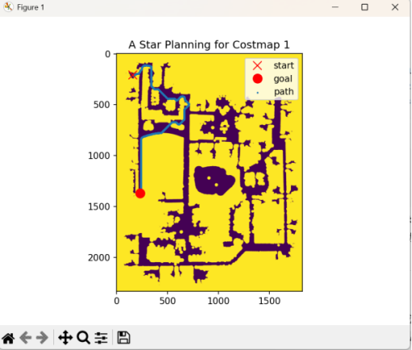
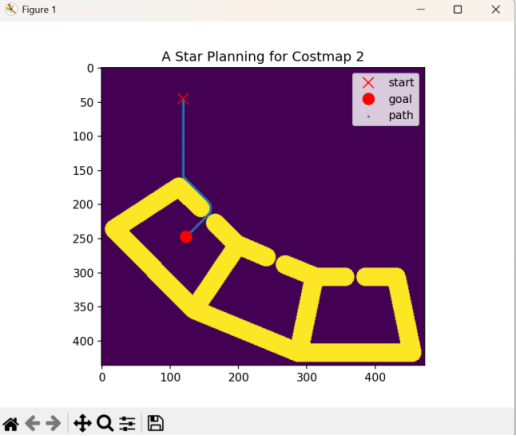
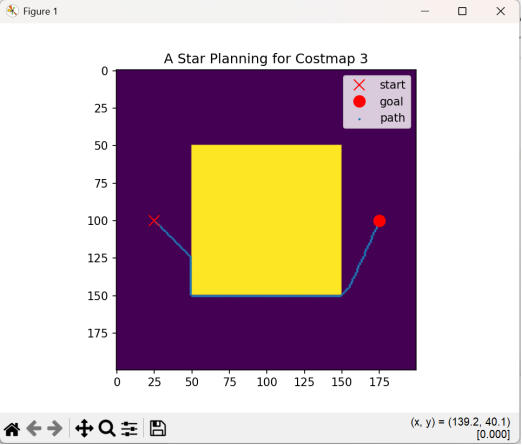

Modern Control Theory: Autonomous Vehicle & Quadrotor Control
Aug 2025 - Dec 2025
Introduction
Autonomous systems need controllers that translate a desired path into stable motion. The social value of this work is reliability: safer drones and ground vehicles require predictable responses before they are tested in the real world. Simulation made it possible to compare control strategies before hardware risk was introduced.
Method
I designed and implemented model-based control algorithms for two classes of systems: autonomous ground vehicles and quadrotor drones. For quadrotors, I developed attitude and position controllers using PID, LQR, and adaptive control concepts with dynamic modeling and state feedback. For ground vehicles, I implemented lateral and longitudinal controllers for path following and maneuvering, including discrete-time control logic.
The project also included planning and simulation tasks that supported control evaluation. I used A* path planning on cost maps to generate feasible routes around obstacles, then evaluated how the vehicle followed those routes using error plots and trajectory overlays. Drone work used a simulated 3D environment to test how controller behavior changed under different flight and tracking conditions.
Simulation Evidence






Results
Controller performance was evaluated through time-domain simulations and stability analysis in MATLAB/Simulink and Python. The simulations clarified how controller gains affected settling behavior, tracking error, and robustness. LQR and state-feedback methods were especially useful for connecting model structure with predictable closed-loop response, while PID designs offered a clear baseline for tuning and comparison.
The route-tracking and A* plots gave concrete ways to evaluate whether the controller was doing more than simply moving the vehicle forward. Cross-track error, waypoint completion, trajectory overlays, and state histories made it possible to judge path accuracy, transient response, and stability across different map conditions.
My Contribution
- Implemented vehicle lateral and longitudinal controllers for path following and maneuvering.
- Developed quadrotor flight-control logic for attitude and position tracking.
- Used MATLAB/Simulink and Python simulations to compare controller response and stability.
- Analyzed simulation results to identify gain choices and modeling assumptions that improved tracking behavior.